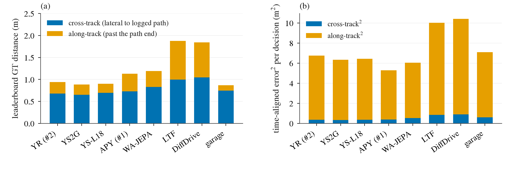
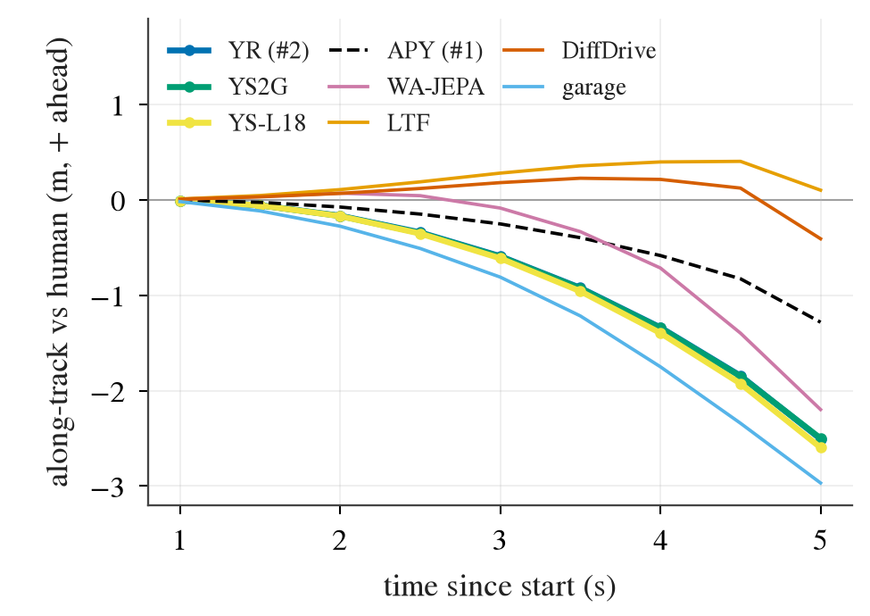

ground_truth.py 第 106–108 行）。
所以我们巡航时落后人类，对这个指标的贡献恒为 0。它的纵向部分只有一种来源：自车跑到人前面、越过了日志路径的终点，这时距离按到终点的直线距离增长。
提交 #2（YR10m10-F-s0）本地 0.941 米 = 横向 0.681 + 越过终点 0.260。越过终点集中在 12.6% 的场景里，public 上多是人起步慢的场景；85 个 ≥ 4 米的 clip 里有 65 个是这样来的，这些场景基本不扣分（0.978）。
把我们的节奏换成人类的（路径不变），GT 降 0.335 米，其中 0.320 来自这些越终点场景，其余场景只降 0.014。
结论：巡航提速式的纵向课 L 不会动 GT，进度分最多挣回 0.022（离 WA-JEPA 只差 0.014），零分不变，所以它不是下一个训练臂。决策 280。评估器每 0.5 秒（每个决策一步）算一次车身中心到日志路径折线的最近距离（shapely LineString.distance），不看「人在这一刻到了哪」；一个 rollout 取所有保留步的最大值，碰撞 / 出路之后、第一次 ≥ 4 米之后的步去掉；榜单值是各 clip 的平均。
同一个文件里还有按时间对齐的 dist_to_gt_location（即 ADE 类误差，第 271 条量的就是它），但它不进榜单。日志路径在 5.5 秒结束，最后一个评估步在 5.017 秒：
落后的车还在路径上，距离只量横向；领先到越过终点的车，最近点被钉在终点上，前后差也算进距离。我们把每个 rollout 最大值那一步拆成 横向部分（lateral_dist_to_gt_trajectory，越过终点时只取垂直分量）和 越终点部分（两者之差）。
复现：从每个 rollout 的逐步序列重做截断与聚合，与存档的每个 rollout 值和每个 run 的 clip 均值 100% 在 1 毫米内；用场景加载器的日志轨迹与控制器位姿重建几何，每步距离也 100% 在 1 毫米内（10 个 driver，public 1479 个场景、held 452 个）。
| driver | GT（米） | 横向部分 | 越终点部分 | 越终点的场景 | ≥ 4 米的 clip（其中横向不到 4 米） |
|---|---|---|---|---|---|
| YR10m10-F-s0（提交 #2） | 0.941 | 0.681 | 0.260 | 12.6% | 85（65） |
| YS2G（两 seed 平均） | 0.885 | 0.652 | 0.233 | 12.5% | 67（56） |
| WA-JEPA | 1.193 | 0.829 | 0.364 | 14.4% | 147（87） |
| LTF | 1.876 | 0.994 | 0.882 | 34.6% | 265（191） |
| DiffusionDrive | 1.843 | 1.049 | 0.795 | 32.0% | 260（179） |
| garage 0014 | 0.869 | 0.743 | 0.126 | 8.0% | 71（28） |
逐场景配对（95% 置信区间按日志聚类重抽）：YR 比 WA-JEPA 低 0.252 [0.166, 0.340]，比 LTF、DiffusionDrive 低 0.9 米以上；比 garage 高 0.072 [−0.008, +0.158]，不可分辨， 其中横向反而低 0.062 [0.004, 0.122]，越终点部分高 0.133 [0.086, 0.187]。YS2G 对 garage 同样：总差 +0.016，越终点 +0.107 [0.063, 0.155]。也就是说，在唯一不输的参考面前，我们多出的只有「跑到人前面」这一项。 预登记时我们预期自己的纵向部分接近 0，这一条错了。


把自车 0.1 秒一点的轨迹按弧长参数化，记下每个弧长处的横向偏差；反事实里自车在每个时刻位于人类所在的弧长，横向沿用自己在那里的偏差（没走到的弧长沿用最后一个值，YR 15.9% 的步；只用走到过的弧长的下界版也列出）。碰撞与出路的截断时刻不变，不能重新模拟。
| driver | 实际 GT | 人类节奏 | 变化 [95% CI] | 来自越终点场景 | 来自其余场景 |
|---|---|---|---|---|---|
| YR10m10-F-s0 | 0.941 | 0.606 | −0.335 [−0.411, −0.265] | −0.320 | −0.014 |
| YS2G | 0.885 | 0.585 | −0.301 [−0.368, −0.237] | −0.291 | −0.010 |
| WA-JEPA | 1.193 | 0.771 | −0.423 [−0.523, −0.327] | −0.436 | +0.013 |
| LTF | 1.876 | 0.948 | −0.928 [−1.062, −0.792] | −0.945 | +0.018 |
| DiffusionDrive | 1.843 | 0.974 | −0.869 [−0.990, −0.754] | −0.874 | +0.005 |
| garage 0014 | 0.869 | 0.679 | −0.190 [−0.236, −0.145] | −0.165 | −0.025 |
越终点与其余场景的拆分是读数后加的探索。「其余场景」就是巡航落后所在的地方，每个 driver 都在 ±0.03 米内：消掉落后不动 GT。 越终点场景在 public 上是人起步慢的场景：人类起步速度中位 1.2 米/秒、末速 3.3（其余场景 6.2）、5.5 秒的日志路径只有 9.7 米（其余 35.4），我们最后一步领先人类中位 4.5 米。 held 18 决策上越终点场景的人类并不慢（末速 6.3），我们同样是领先。
算术（只是算术）：落后加不了这个指标。横向保持 0.681 米时，要从 0.941 到 private 的 1.733，越终点部分要从 0.260 涨到 1.05，即 51% 的 clip 越终点（本地 12.6%）； 按本地每个 clip 的结构，等价于 23.9% 的 clip ≥ 4 米（本地 5.7%，其中四分之三是越终点）。private 上两种来源分不开。
场景分 = 0（过错碰撞、出路、横向离开 4 米走廊）否则 min(进度 / 0.8, 1)，日志路径不到 5 米的场景进度记 1。越过终点不算离开走廊。
| driver | 平均分 | 非零场景里进度 < 1 的 | 进度扣掉的分（按全部场景平均） |
|---|---|---|---|
| YR10m10-F-s0 | 0.932 | 262（17.7%） | 0.022 [0.017, 0.027] |
| YS2G | 0.951 | 252 | 0.020 |
| APY10m10-AB-s0（提交 #1） | 0.943 | 143 | 0.009 |
| WA-JEPA | 0.902 | 91 | 0.007 |
| LTF | 0.831 | 224 | 0.028 |
| DiffusionDrive | 0.803 | 220 | 0.029 |
| garage 0014 | 0.746 | 312 | 0.093 |
YR 比 WA-JEPA 多扣 0.014 [0.009, 0.020]，比其余三个少扣。18 决策 held 上扣得更多：YS2G 0.061，参考 0.036–0.046。
巡航提速式的课 L 不是下一个训练臂。预登记的预期应写成：public 10 决策上 GT 变化 0 ± 0.05 米（反事实在非越终点场景上 −0.014）；分数变化不超过 +0.022（进度扣分全部收回的上界），现实不超过 +0.014（到 WA-JEPA 的水平）；零分不变；held 18 决策上界 +0.061。 不分场景地提速，会在人起步慢的场景里更多地跑到人前面，GT 反而上升。如果课 L 要动 GT，该加的是另一个方向的项：从低速起步时不要跑到人前面（越终点部分的上界是 −0.26 米），而这一项基本不影响分数。 private 上的分数差距仍在零分（横向离开走廊、碰撞），那是下一臂该对准的地方。
预登记 experiments/gt_decomp/plans/2026-10-12-gt-decomp-prereg.md；表 experiments/gt_decomp/results/gt_decomp.md 与 results/pub_*.csv、held_*.csv、gd.json；
决策 research/decisions/280.md；代码 experiments/gt_decomp/scripts/gd.py、gd_report.py；box $DATA_DIR/runs/gt_decomp/collect-pub/20261012-185417、collect-held/20261012-185436。
评估器 ~/data/third_party/alpasim @ 0bb4c4b，src/eval/src/eval/scorers/ground_truth.py、aggregation/{main,processing,modifiers,scene_score}.py。